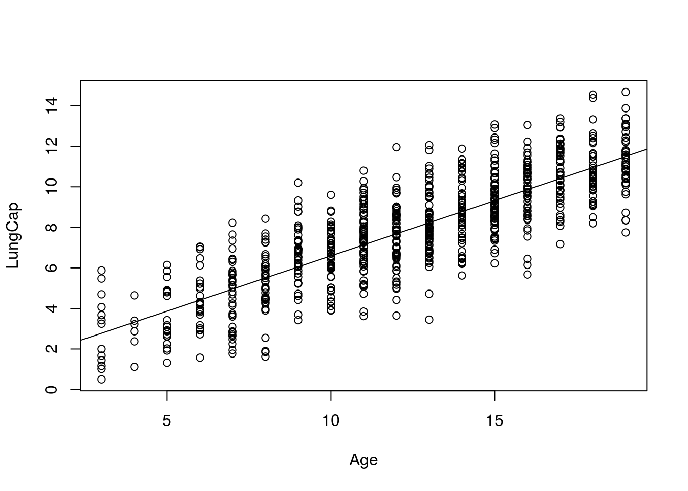
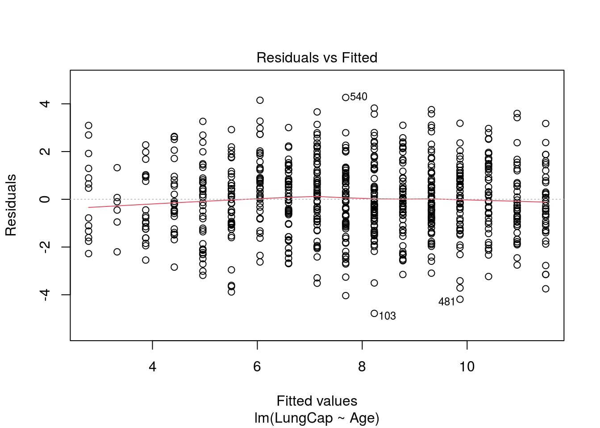
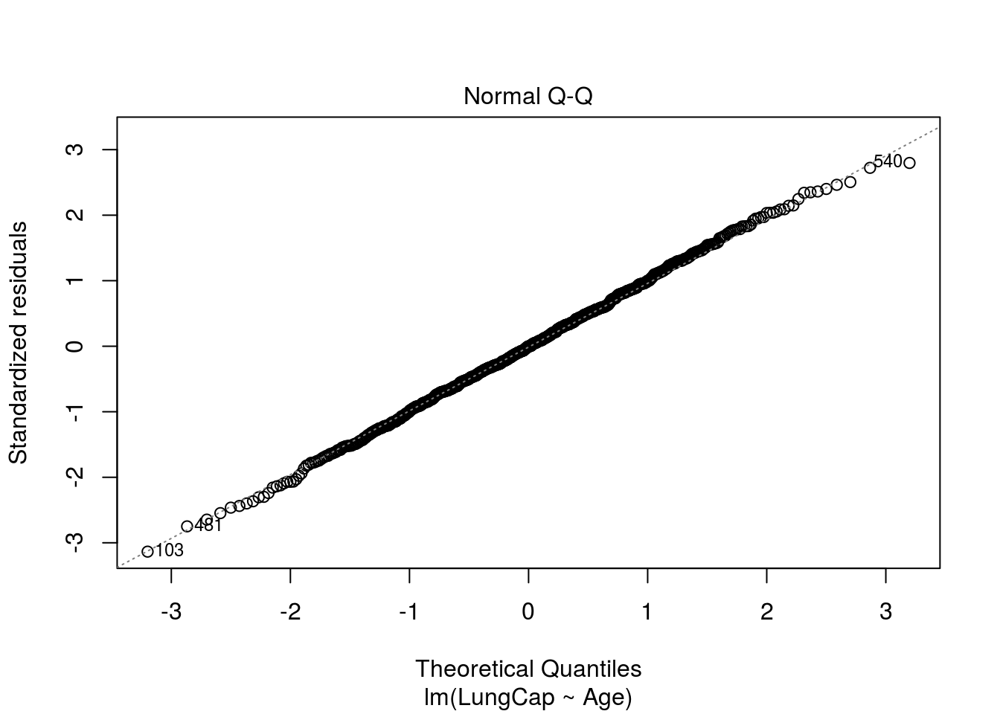
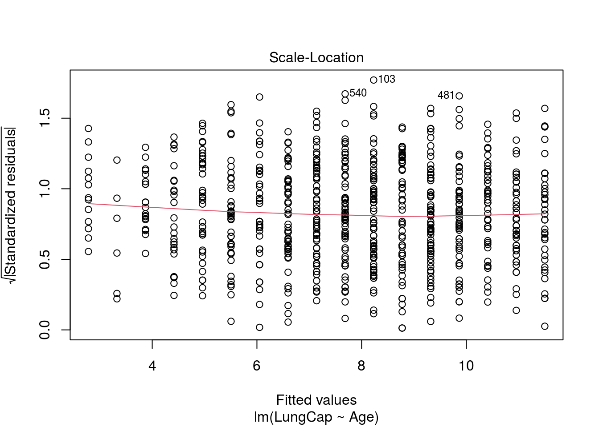
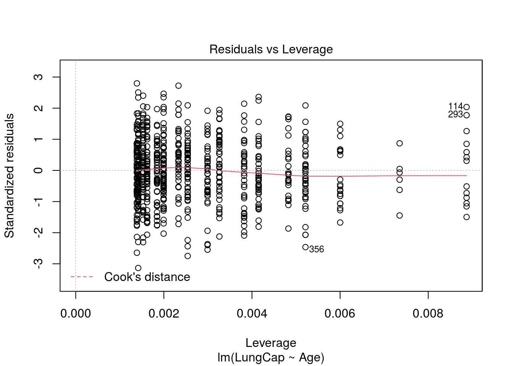

M Checking Regression Assumptions
by Doc P, 10 Jun 2020
Reference: Marin Video 5.2
WHile we will not be doing much with this information, there are several easy tests we can perform to deteremine whether a linear regression is a proper approach for eplaining a relationship.
First, Import and attach the LungCapData set.
Next, run the code we used in the last Crib Sheet to generate the regression analysis.
plot(Age, LungCap)
mod<-lm(LungCap ~Age)
summary(mod) ##
## Call:
## lm(formula = LungCap ~ Age)
##
## Residuals:
## Min 1Q Median 3Q Max
## -4.7799 -1.0203 -0.0005 0.9789 4.2650
##
## Coefficients:
## Estimate Std. Error t value Pr(>|t|)
## (Intercept) 1.14686 0.18353 6.249 7.06e-10 ***
## Age 0.54485 0.01416 38.476 < 2e-16 ***
## ---
## Signif. codes: 0 '***' 0.001 '**' 0.01 '*' 0.05 '.' 0.1 ' ' 1
##
## Residual standard error: 1.526 on 723 degrees of freedom
## Multiple R-squared: 0.6719, Adjusted R-squared: 0.6714
## F-statistic: 1480 on 1 and 723 DF, p-value: < 2.2e-16abline(mod)
At this point “plot(mod)” will produce the diagnostic plots, hit return to cycle through the plots.
plot(mod)
1st plot is a residual plot - the red line should be straight and residuals randomly distributed.
2nd plot is a Q-Q plot (Quantile - Quantile) and will be a diagonal straight line if residuals are normally distributed.
3rd and 4th identify other problems with which we are not concerned.
Non constant variance will show up in the plots with a “megaphone” shape, while non-linearity will show up with a curved line on the diagnostic plots. Our plots look good, suggesting that a linear regression analysis is a reasonable approach for these data.